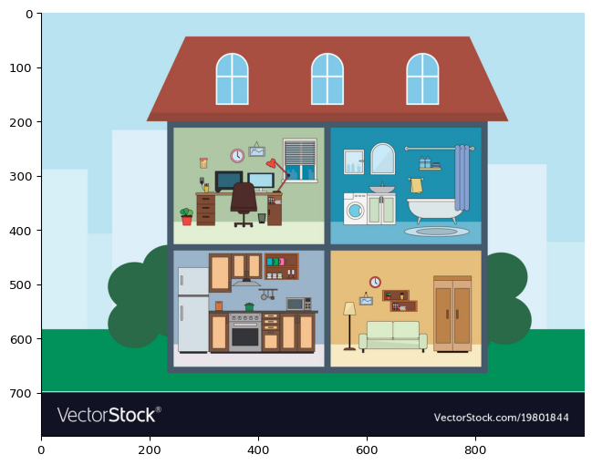
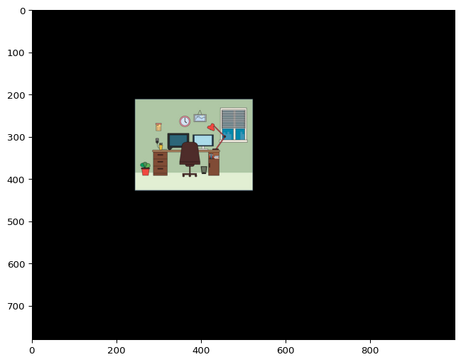

from PIL import Image
import numpy as np
im_filename = "images/image-house-vector-stock.jpg"
im = np.array(Image.open(im_filename))Hint 2 - applying a rectangular mask
Example: Applying a mask containing a rectangle to an image
I have downloaded an online image of a house for this example (from Vector Stock). This image contains four different rooms and I want to use a rectangular mask so that only the office room is displayed. As described previously, we can open this image using a the Image sub-module of a module called pillow (imported as PIL) which understands how to read image files. We can then convert this input into a numpy array object.
im is a three dimensional numpy array object - includes height, width and colour channel (R, G, B).
shape = im.shape
print(shape)(780, 1000, 3)import matplotlib.pyplot as plt
fig, ax = plt.subplots(figsize=(8,8))
ax.imshow(im)
The imshow function knows how to interpret this 3D shape to show a colour image.
Create a rectanglar mask using a function
I can define an function called inside_rectangle() to tell me whether a given (x, y) position is within a rectangle for a set of parameters. This will return True if the position is inside the rectangle and False otherwise.
The rectangle can be evaluated using the conditions:
\[|x - x_0| = w/2\] and \[|y - y_0| = h/2\]
where - \(x\), \(y\) are the x, y positions within the grid - \(x_0\), \(y_0\) are the centre of the rectangle - \(w\), \(h\) - are the full width and height of the rectangle - \(| |\) means the magnitude of the difference
def inside_rectangle(x,y,centre=(0,0),width=20,height=10):
x0 = centre[0]
y0 = centre[1]
distance_x = np.abs(x - x0) # Magnitude of distance
distance_y = np.abs(y - y0) # Magnitude of distance
# Check if (x, y) position is within the rectangle
if distance_x < width/2 and distance_y < height/2:
return True
else:
return FalseFor this mask, I want to define the parameters as follows:
# Input parameters
centre = (382,320)
width = 280
height = 218The inside_rectangle function allows you to pass the parameters for your position and your rectangle and can tell you whether the position is within your rectangle (returns a True value) or not (returns a False value). For example if we had a position of (50, 50) we could use the function as follows:
x = 50
y = 50
position_is_in_rectangle = inside_rectangle(x, y, centre=centre, width=width, height=height)
if position_is_in_rectangle:
print(f"Position ({x}, {y}) is within the rectangle")
else:
print(f"Not within rectangle")Not within rectangleHere we used the output of inside_rectangle as our condition directly (Python sees this if True or if False and follows the logic accordingly).
We can use the inside_rectangle() function to define our mask - looping over every element and checking the x, y position with the inside_rectangle() function with the appropriate parameters:
ncol = shape[0]
nrow = shape[1]
# Create array of zeros based on shape of input image - height x width
rect_mask = np.zeros(shape[0:2],dtype=int)
for y in range(ncol): # iterate over first dimension
for x in range(nrow): # iterate over second dimension
# Check whether x, y position is within defined rectangle
position_is_in_rectangle = inside_rectangle(x, y, centre=centre, width=width, height=height)
if position_is_in_rectangle:
rect_mask[y, x] = 1
print(f"Shape of mask: {rect_mask.shape}")Shape of mask: (780, 1000)As before, we don’t need an else block here because the array we have defined already contains zeros.
Extended: See alternative numpy method mask in Hint 1 notebook for a more efficient way to create a square mask. Could you extend this method to reproduce a rectangular mask (without the need for the inside_rectangle function)?
Apply mask to the image
Now we have created rect_mask, we need to apply this to my image. We can do this by multiplying im by rect_mask and this will combine element-wise. This means that each pixel in the image will be multiplied by the corresponding value within the mask. Multipying by 0 will result in the output pixel also being 0 but multiplying by 1 will retain the original value in that pixel.
For creating the im_masked output there a few ways you could do this - the upshot is that you want to create an array of the right shape: - Create an empty array of the right shape - Create a new variable called im_masked which is a copy of the im using the copy() function (method)
Because im is a three dimensional array (height x weight x colour channel), one way to apply the mask is to do this for each of the three colours (R, G, B channels) separately.
## Create an empty array of the right shape
im_masked = np.empty(shape)
## OR make a copy and then apply mask
#im_masked = im.copy()
# Update the values within this array for each colour channel
im_masked[:,:,0] = im[:,:,0]*rect_mask # shapes match (780, 1000) x (780, 1000)
im_masked[:,:,1] = im[:,:,1]*rect_mask # shapes match (780, 1000) x (780, 1000)
im_masked[:,:,2] = im[:,:,2]*rect_mask # shapes match (780, 1000) x (780, 1000)
# # Another way to write this would be to add an extra dimension to our mask
# # - This can be done using the np.newaxis constant to add an extra dimension
# # - Numpy can then *broadcast* along this new dimension to combine correctly
# im_masked = im*rect_mask[:,:,np.newaxis] # shapes (780, 1000, 3) x (780, 1000, 1)
fig, ax = plt.subplots(figsize=(8,8))
ax.imshow(im_masked.astype(int)) 